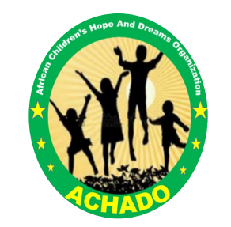
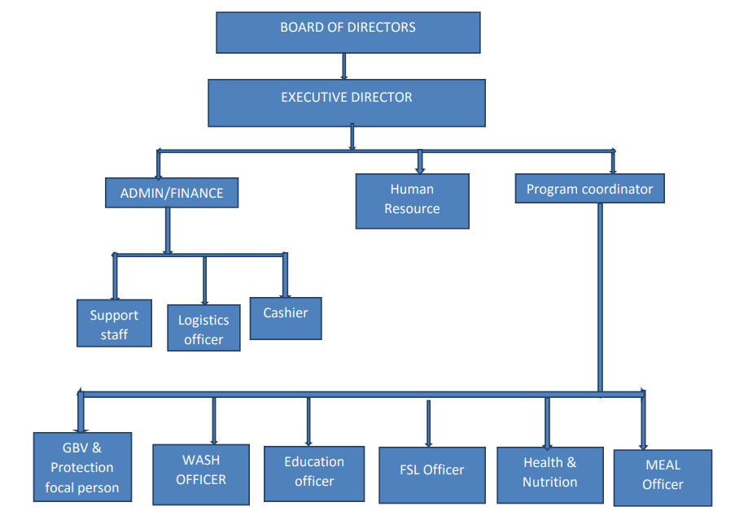

African Children’s Hope and Dreams
Organization (ACHADO)
Address: Juba, South Sudan
achadosouthsudan2021@gmail.com
contact :+211929599954 /+211919337303
Organization Profile August 2022
1.0 ORGANIZATION INFORMATION
1.1 ACHADO Background
African Children’s Hope and Dreams Organization (ACHADO) is a non-profit organization
established in 2020, inspired by the group of Youth and Women with the aims of
responding to devastating social, economic, and illiteracy challenges facing children in
the Republic of South Sudan. Purposes to enable civic roles values through training in
peace building, civic education for social trust and transformation through trauma healing
at the best of an endeavor of mitigating conflicts between communities and tribes in the
Republic of South Sudan due to ethnic, communal conflicts and significant numerous of
human rights violations and still going on which happening amongst the communities of
South Sudan. ACHADO works for tremendous transformation aims of conversion of the
conflict in South Sudan from a violent and destructive force to one that will conductively
produce social change to promote and maintain the dignity of South Sudanese.
ACHADO is registered in South Sudan as national Humanitarian and Developmental
Organization with the ministry of Justice and Constitutional affairs and the Relief and
Rehabilitation Commission.
ACHADO is Deeply mindful of Religious, Racial, Ethnic Tribal and Cultural Diversity in
every community and is committed to serving the Civil Society, Youth and Women
Associations in the Republic of South Sudan by promoting, protecting and upholding to
the great values and principles of fostering livelihood, Development, Peace building,
conflict Resolutions, Rules of law, Social Justice, Child Rights, Women Rights, Human
Rights, Gender equity, Women and Youth Empowerment.
1.2 OUR VISION
Communities where children and their caregivers are empowered to improve their own
livelihood through appropriate and affordable alternatives
1.3 OUR MISSION STATEMENT
To restore hope among vulnerable children and communities that have been affected by poverty,
abuse, violence, disease and other natural calamities
1.4 Our Motto:
Holistic Transformation of the Children for a better Society.
1.5 ACHADO’s aims and objectives
a) To liaise and establish means of supporting orphans, poor children especially in education
advancements offer relief services whenever there is need or emergency.
b) To seek greater involvement of the vulnerable and marginalized groups of people such as IDPs,
Widows, orphans, and people with attentive medical care such as person with HIV/AIDS as
well as chronic Hepatitis in emergency, rehabilitation, recovery and development through
involvement of communities in decision-making.
c) To support environmental conservation, Food Security, livelihoods, health, and other
innovative self-improvement initiatives as defined by the targeted communities.
d) To spearhead the development of Children’s welfare on Education, Public Health, access to
Safe Water and Sanitation amongst communities in South Sudan.
e) To improve the quality of life through socio-economic support of the less privileged in the
society especially the vulnerable and marginalized groups, with special emphasis on women
empowerment, people with special needs and minority groups’ protection.
f) To apply to any government or authority, public bodies, corporations or persons for and to
accept grants of money and of any moveable or immovable property, donations, gifts,
subscriptions and other assistance with a view to promoting the objects of the organizations
and, in taking of any gifts or property take the same subject to any special trust which may be
prescribed by the donor thereof.
g) To organize training and vocational centers to enhance the acquisition of life skills to youth
and the community.
h) To do all such other things as are incidental or conducive to the attainment of any of the above
objects.
i) To invest the money in the organization not immediately required in any one of more of the
modes of investment of trust moneys or in such other manner as the Board of the Organization
may from time to time determine.
j) To raise, mobilize and disburse funds and other resources for the promotion of the objectives
of the organization.
k) To receive contributions, gifts, bequests, and devices either in cash, securities or other
property, real or personal, without limitations to amount or value except such limitations to
amount as now prescribed hereafter by law.
l) To hold seminars, workshops and conferences on Children’s right and on methods of reducing
the negative social behavior amongst the youth, young adults and disaster affected
communities.
1.6 ACHADO’s CORE VALUES
a) Accountably and Transparency
b) Human rights
c) Responsibility
d) Confidentiality
e) Respect for others
f) Commitment and trust ship
g) Networking
h) Performance and team working
I) Peace culture and pluralism
j) Serving the people in equal approach in line with our Organizational slogans.
k) Mutual respect and partnership with the development humanitarian actors’ include
human rights and media groups (Agencies).
2.0 ACHADO’s programs areas
1. Child Protection
2. Peace building and Conflict mitigation
3. Gender Base Violence (GBV)
4. Health & Nutrition
5. Water and Sanitation (WASH)
3.0 ACHADO’s Areas of operations
a) Warrap State
b) Northern Bahr el Ghazal state
c) Western Bhar el Ghazal stat
d) Central Equatoria state
e) Unity State
f) Eastern Equatoria State
g) Abyei Administrative Area
4.0 Governance and Administration of ACHADO
ACHADO has competent staffs from various backgrounds ranging from Social work and Social
Administration, Finance, Education, Agriculture and Public Health. They will be also assisted by
external consultants from various consulting partners. With this team, therefore, ACHADO will
be capable of implementing programmes geared towards meeting its mission, vision and
objective
ORGANISATIONAL STRUCTURE

5.0 ACHADO’s membership to Forums
a) WASH cluster
b) FSL cluster
c) Protection Cluster
d) Health and Nutrition Cluster
e) National NGO Forum
THANK YOU